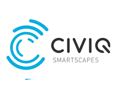
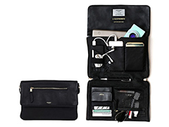
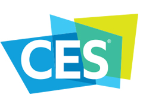

        <!-- /Parallax -->
        <div class="container">
        <div class="row">
        <div class="white-space space-small"></div>
        <div class="col-md-12 columns">
        <div class="row">
<a href="announcements/kickstarter-it-s-not-just-for-startups-anymore.html" target="">
<h4 class="fancy-title"><span>Kickstarter: It’s Not Just for Startups Anymore</span></h4>
</a><a href="announcements/kickstarter-it-s-not-just-for-startups-anymore.html" target=""></a><a href="announcements/kickstarter-it-s-not-just-for-startups-anymore.html" target=""></a>
<h5>Targetpath Senior Partner, Deena Ghazarian on Technology Insider Group</h5>
<p> <p>Targetpath Senior Partner, Deena Ghazarian, tells us how established companies are using the power of crowdfunding sites to launch, promote and even sell their creative innovations. The main benefit: &nbsp;the gadget-friendly, younger influencers you find on these platforms.<br />
<a href="announcements/kickstarter-it-s-not-just-for-startups-anymore.html"><br />
Read More.</a></p></p>
</div>
<div class="white-space space-small"></div><div class="row">
<a href="announcements/civic-smartscapes-brad-gleeson-smart-city-sxsw.html" target="">
<h4 class="fancy-title"><span>CIVIQ Smartscapes founder, Brad Gleeson, to speak at Smart City Day at SXSW</span></h4>
</a><a href="announcements/civic-smartscapes-brad-gleeson-smart-city-sxsw.html" target=""></a><a href="announcements/civic-smartscapes-brad-gleeson-smart-city-sxsw.html" target=""></a>
<h5>Targetpath Founder, Brad Gleeson, Shows What's Working in "Smart Cities"</h5>
<p> <p>Brad Gleeson, Chief Commercial Officer, CIVIQ Smartscapes will be adding CIVIQ's perspective on what's working, what's needed and what is to come at the Smart City Day at SXSW. The session is this Sunday March 12th at the San Antonio House in Austin, and will run from 11am - 4pm. Brad will be speaking at 11:55am onwards.&nbsp;</p></p>
</div>
<div class="white-space space-small"></div><div class="row">
<a href="announcements/knomo-bags-with-the-smart-target-digital-nomads.html" target="">
<h4 class="fancy-title"><span>KNOMO’s Bags with ‘The Smarts’ Target Digital Nomads</span></h4>
</a><a href="announcements/knomo-bags-with-the-smart-target-digital-nomads.html" target=""></a><a href="announcements/knomo-bags-with-the-smart-target-digital-nomads.html" target=""></a>
<h5>Dealerscope interviews Deena Ghazarian, Global Sales VP, KNOMO</h5>
<p> <p>Industry veteran Deena Ghazarian talks to Dealerscope about the huge &ldquo;digital nomad&rdquo; trend  and how Targetpath client, Knomo, fits right in and leverages a fantastic base of partnerships with celebrities</p></p>
</div>
<div class="white-space space-small"></div><div class="row">
<a href="announcements/client-knomo-tackles-international-smart-accessory-market.html" target="">
<h4 class="fancy-title"><span>Team Knomo gets royal treatment...and raises £3m</span></h4>
</a><a href="announcements/client-knomo-tackles-international-smart-accessory-market.html" target=""></a><a href="announcements/client-knomo-tackles-international-smart-accessory-market.html" target=""></a>
<h5>Pippa Middleton carries a Knomo bag and they've just raised £3m - meet team Knomo</h5>
<p> British bagmaker, and Targetpath client, Knomo is conquering international markets. Knomo is focused on organising and protecting your technology to enable you to travel, move and work freely. They are building a lifestyle brand that balances style and function with bags and accessories that are versatile (you can carry a Knomo into a business meeting or on holiday) and combine smart technology (including charging on the go and RFID protection).</p>
</div>
<div class="white-space space-small"></div><div class="row">
<a href="announcements/consumer-technology-association-board-members.html" target="">
<h4 class="fancy-title"><span>CTA Announces 2017 Executive Board and Board of Industry Leaders</span></h4>
</a><a href="announcements/consumer-technology-association-board-members.html" target=""></a><a href="announcements/consumer-technology-association-board-members.html" target=""></a>
<h5>Targetpath's Deena Ghazarian Joins Consumer Technology Association Board</h5>
<p> <p>The Consumer Technology Association (CTA), the nation&rsquo;s leading trade association representing more than 2,200 consumer technology companies, today announced the election of its 2017 Executive Board and Board of Industry Leaders (BIL), including Targetpath Senior Partner Deena Ghazarian.</p></p>
</div>
<div class="white-space space-small"></div>
        </div>
        </div>
        </div>
    

        </div>
 <!-- /Main Container -->
      